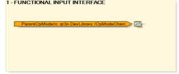
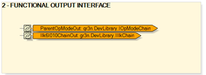

For the PC_600 CAT object, here are the identified interfaces:
ParentOpModeIn; input interface adapter of adapter type IOpModeChain.
ParentOpModeOut; output interface adapter of adapter type IOpModeChain.
Ilk6IO10ChainOut; output interface adapter of adapter type IlkChain.
The Parent operation mode interfaces (ParentOpModeIn and ParentOpModeOut) represent the capability of an object to control its operational mode as well as that of all hierarchically aggregated sub-systems.
|
 |
 |